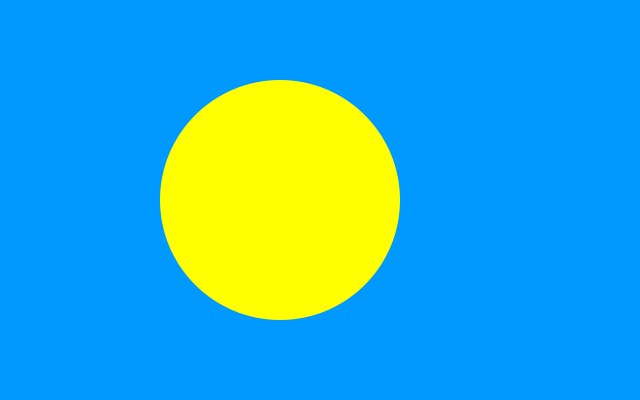

Languages Spoken:
Palauan, English
Places to Visit:
- Rock Islands Southern Lagoon
- Jellyfish Lake
- Milky Way
- Ngardmau Falls
- Long Beach
Traditions:
- Matrilineal traditions
- omersurch birth ceremony
- ocheraol first-house ceremony
- kemeldiil funeral services
- Bai
Customs:
Palauans are known for their woodcarving and storytelling skills, and they often tell stories through wood carvings or storyboards.
Trivia:
Palau has more marine species than any other comparable area in the world, including 400 species of hard corals, 1,400 species of reef fish, and seven of the nine species of giant clams. Palau is sometimes called the "Underwater Serengeti" because of its abundant marine life.
